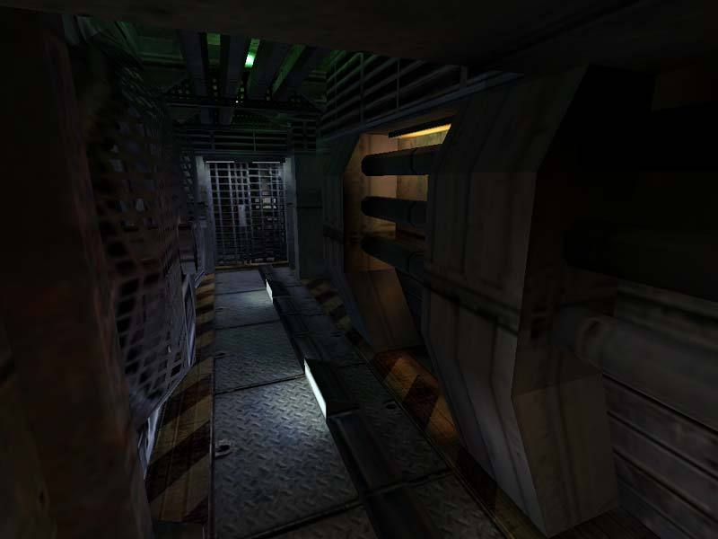
Half-Life: Nightwatch (unreleased)
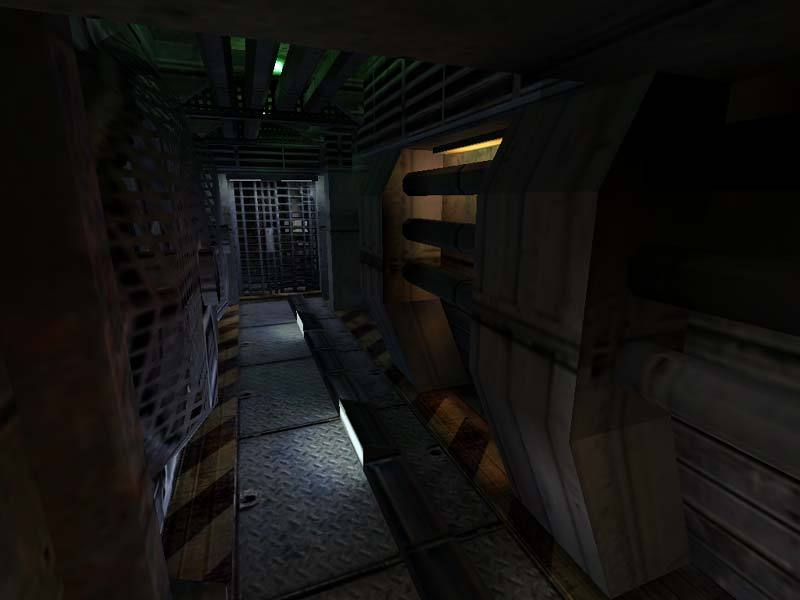
Half-Life: Nightwatch (unreleased)

Riverpool by Rimrook
That’s beautiful. What kind of map was it?
It was part of a TWHL competition, map a single room/area. It’s not really playable in that there’s nothing to do but look around. Still gorgeous, though.
Riverpool by Rimrook

Legacy from Issues by Robert Yang and Ben Ives

Repent for Opposing Force deathmatch by Richard Gray


The Military Vehicles of Half-Life 1
These vehicles are not actually models but level design ‘brushes’ made in the same way walls and floors were put together in the game.
Images via Combine Overwiki

ns_eclipse for Natural Selection by Andrew Weldon
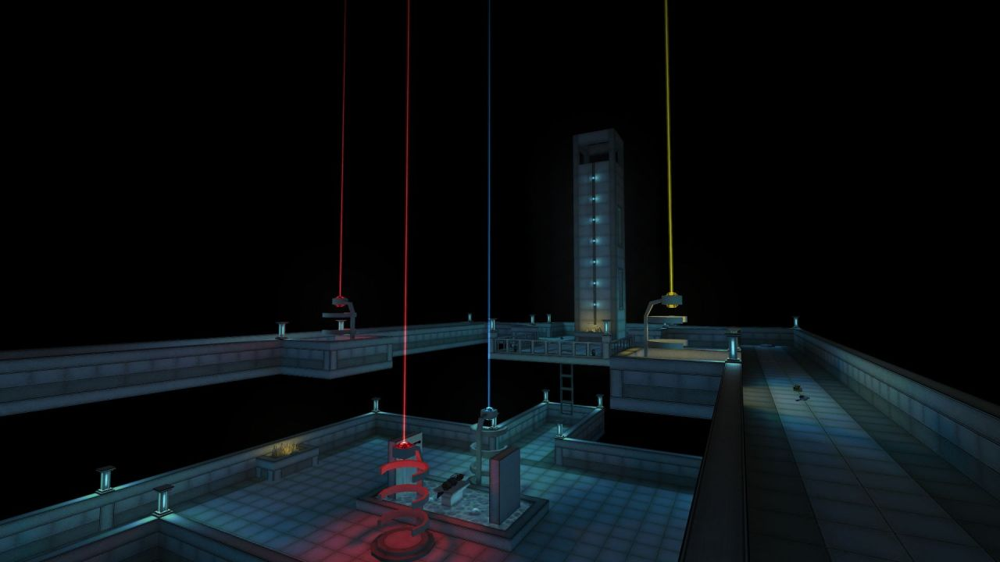
dm_voidtemple for Half-Life deathmatch by Andy Morris
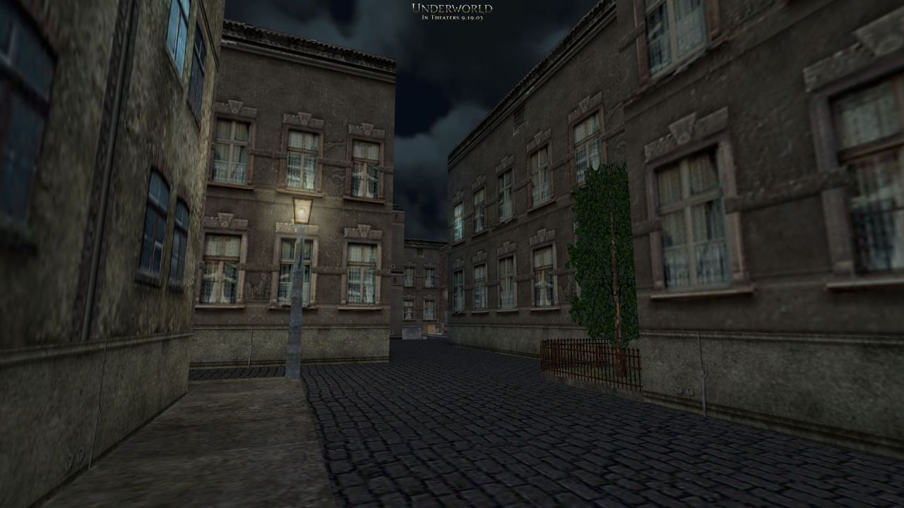
City for Underworld: Bloodline by Black Widow Games
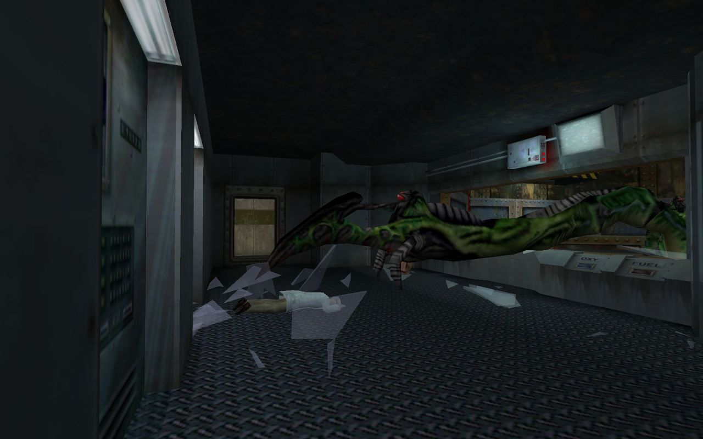
Blast Pit from Half-Life by Valve

dod_falaise for Day of Defeat by Wes Shull
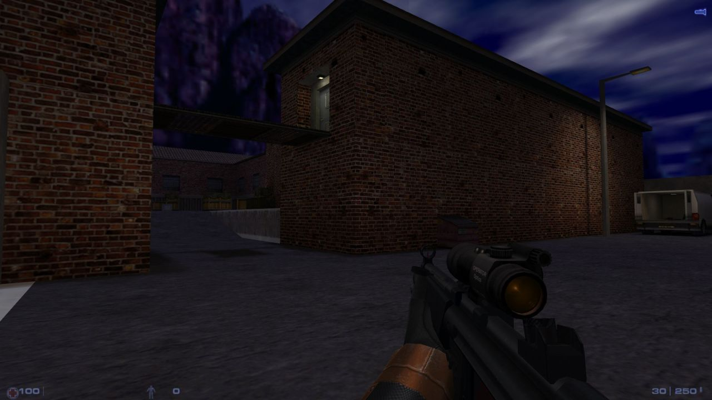
sc_mako for Sven Co-op by MrSheen
Sven Co-op 5.0 is now on Steam! http://store.steampowered.com/app/225840

Fortified 1: Assault on Death Station for Sven Co-op by Nih
Sven Co-op 5.0 is now on Steam! http://store.steampowered.com/app/225840

Black Mesa: Special Tactics Sector for Sven Co-op by Trempler
Sven Co-op 5.0 hits Steam today! http://store.steampowered.com/app/225840
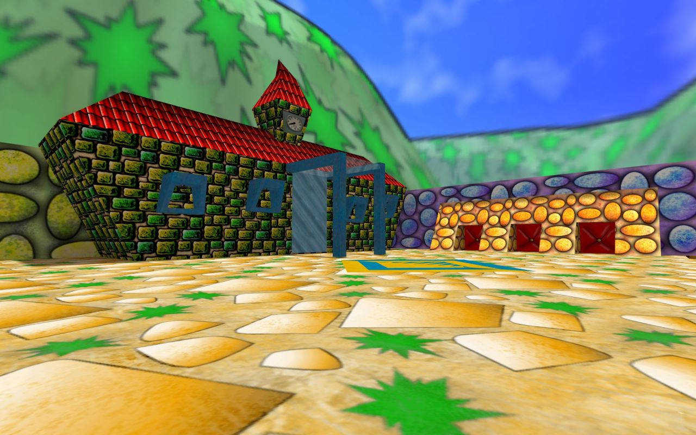
Toon Run for Sven Co-op by koelzk
Sven Co-op 5.0, coming to Steam tomorrow! http://store.steampowered.com/app/225840
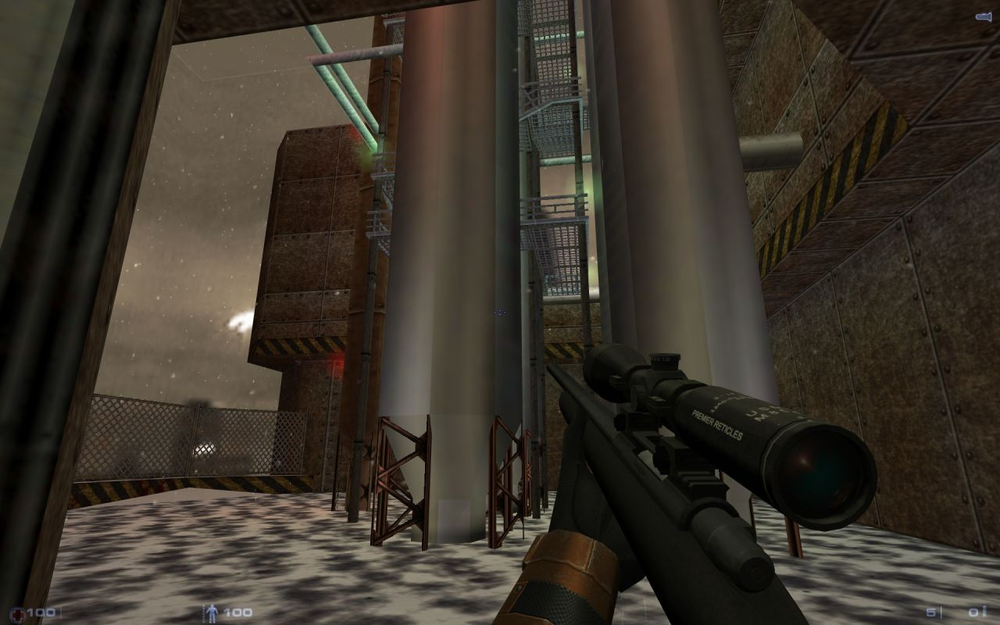
sc_reflux for Sven Co-op by g1l
Sven Co-op 5.0, coming to Steam tomorrow! http://store.steampowered.com/app/225840

Half-Life: Opposing Force, PC.
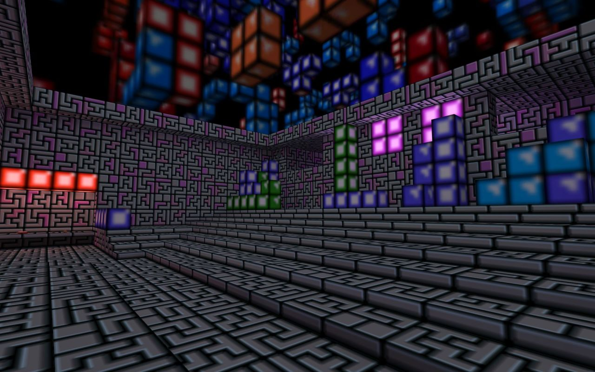
sc_tetris for Sven Co-op by A1win
Sven Co-op 5.0 coming to Steam in 2 days! http://store.steampowered.com/app/225840
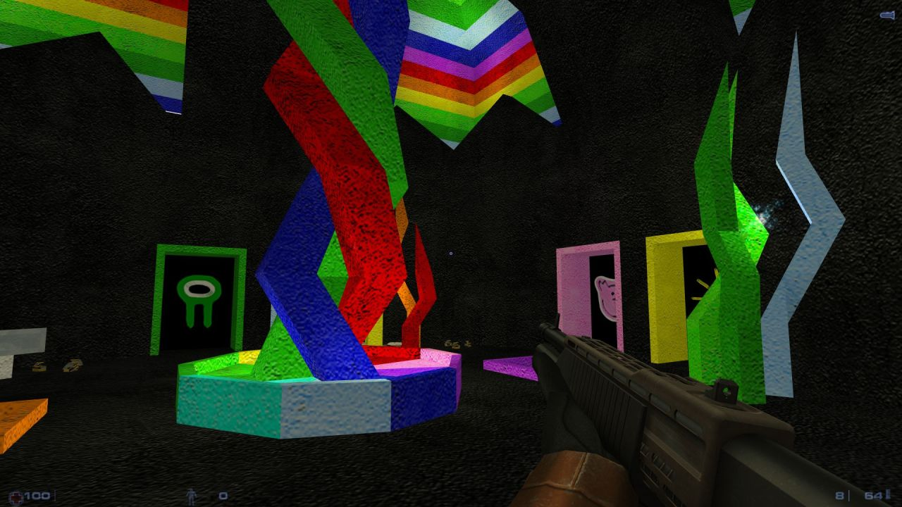
sc_psyko for Sven Co-op by LemonSoda
Sven Co-op 5.0 coming to Steam in 2 days! http://store.steampowered.com/app/225840
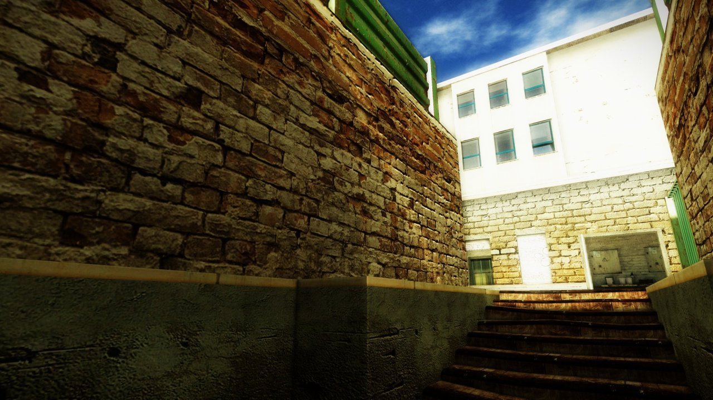
Arrangement (upcoming)

Casbah for Team Fortress Classic by Dave Johnston and Valve

fy_manticore for Counter-Strike by Skaarj
via @dot_bsp

Down Time by Randune
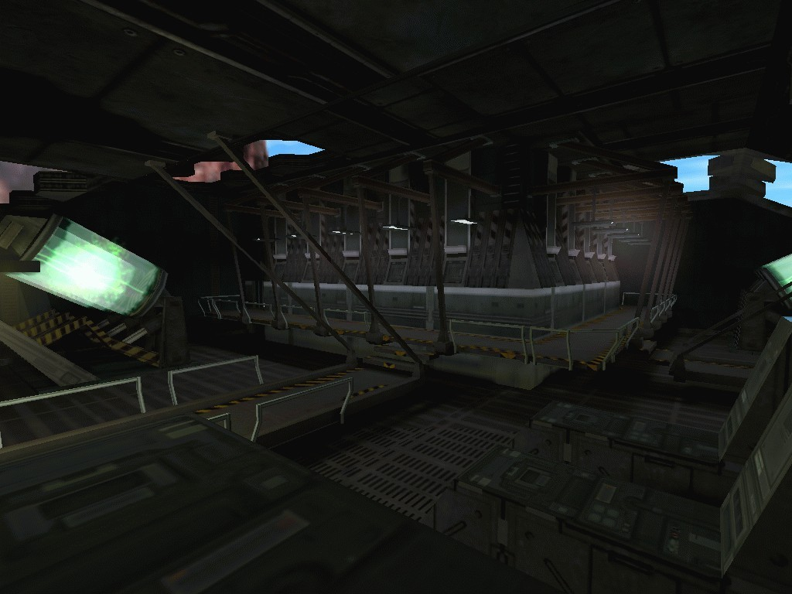
O.U.T.C.A.S.T. (unreleased)
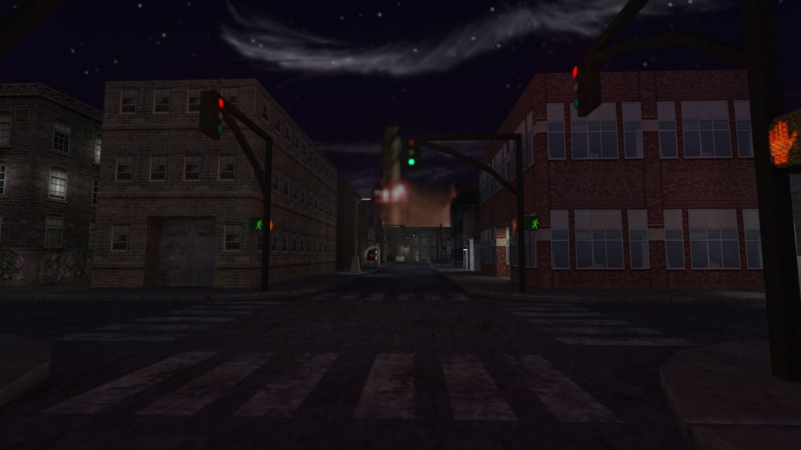
dm_streetlevelremake for Half-Life Deathmatch by Xylemon
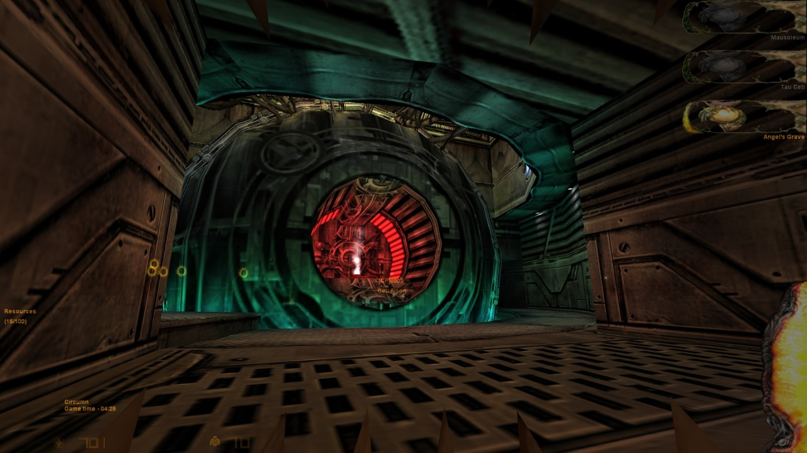
ns_machina for Natural Selection by Jon Chapman
Sven Co-Op 5.0
What’s old is new again! Goldsource just keeps on chugging.

The Whisper (upcoming) by WishWare

ts_theatre for The Specialists by X-Tender
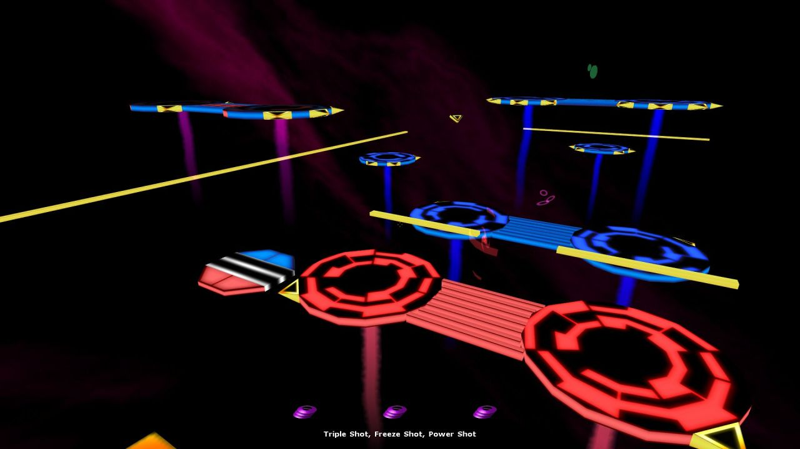
rc_ratrace for Ricochet by VadaVaka

Dark Truths (unreleased) by Robert Yang

TWHL Tower by Strider
Just released! http://www.runthinkshootlive.com/posts/twhl-tower/
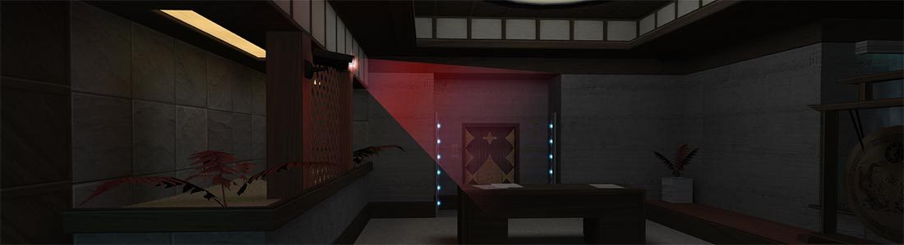
TWHL Tower is now available from RTSL:http://www.runthinkshootlive.com/posts/twhl-tower/
Thanks to TWHL and Urby for making it and allowing me to release it first.
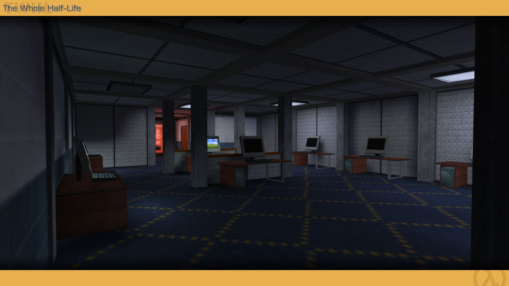
TWHL Tower (upcoming) by TJB
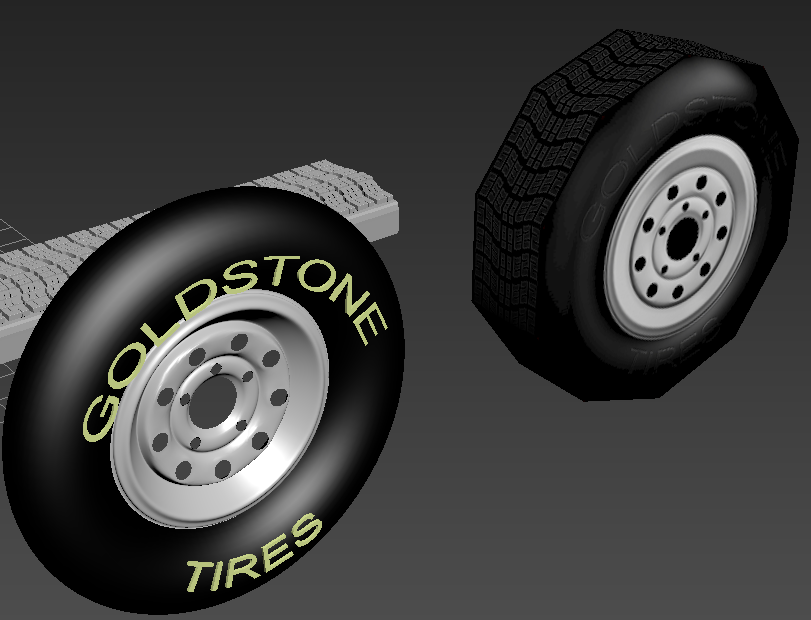


Here is a test I made on GoldSrc model creation using methods normally used for modern engines. Basically its the same as usual highpoly-to-lowpoly texture baking only everything is combined into a single 8-bit BMP. I took the normal map bake and turned it into cavity maps using xnormal plugin for lighting adjustments/masks in photoshop. In some situations you can use the B&W green channel of the normal map to add a top-down shadow effect.
A technical hurdle was dealing with was how to tile a texture for the tread but do it without UVW tiling. A limitation of GoldSrc models is that they do not support tiling off the UV space , so what I had to do is use the UVW “Face” unwrap method so each polygon around the circumference of the tire is planar mapped to one 128X128 texture. Now I have a tiling texture so I don’t have to use a wasteful whole unfold unwrap and large long texture; and I can get around the off-grid limit this way.
Last image is a physbaked animation. Final model is 76 polygons per tire.
GoldSRC in 2016, it’s great to see!

TWHL Tower (upcoming) by Andy Morris

TWHL Tower (upcoming) by Tetsuo
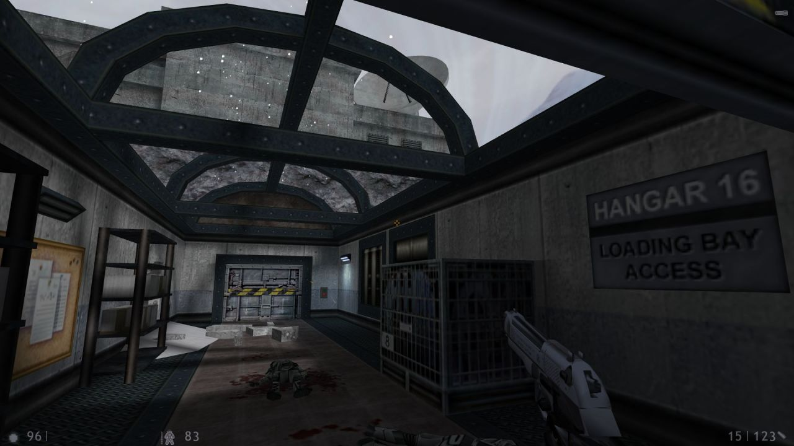
Arctic Incident by XF-Alien

Poke646: Vendetta by Marc Schroeder

Gunman Chronicles by Rewolf Software

dod_glider for Day of Defeat by Wesley Shull